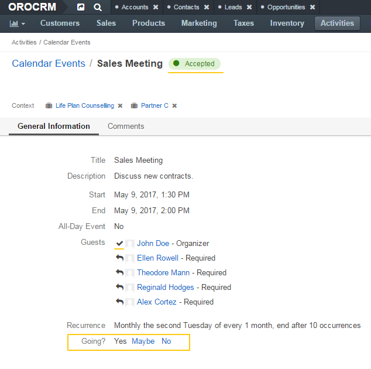
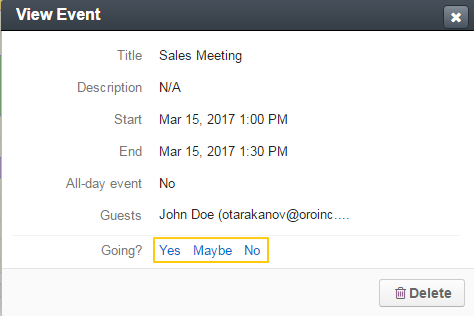

Respond to a Calendar Event¶
From the Calendar Events Grid¶
To respond to a calendar event when viewing a list of events:
In the main menu, navigate to Activities>Calendar Events.
In the grid on the Calendar Events page, click the ellipsis menu at the end of the row with the event you want to reply to and then click either the Accept, Tentative, or Decline icon depending on whether you are going to attend the event.

From the Calendar Event View Page¶
To respond to a calendar event when viewing the event details:
In the main menu, navigate to Activities>Calendar Events.
In the grid on the Calendar Events page, click the required event.
Alternatively, you can click the ellipsis menu at the end of the corresponding row and then click the View icon to get more details about the event before responding.
On the calendar event view page, next to the Going? label, click either the Yes, Maybe, or No link depending on whether you are going to attend the event.

From the My Calendar page or Today’s Calendar Widget¶
To respond to a calendar from a calendar (in Today’s calendar widget or in your calendar page):
Click the event in the calendar.
At the bottom of the View Event calendar card, next to the Going? label, click either the Yes, Maybe, or No link depending on whether you are going to attend the event. The corresponding status appears next to the event name and the icon in front of your name in the list of guests that indicates the response status changes accordingly.
